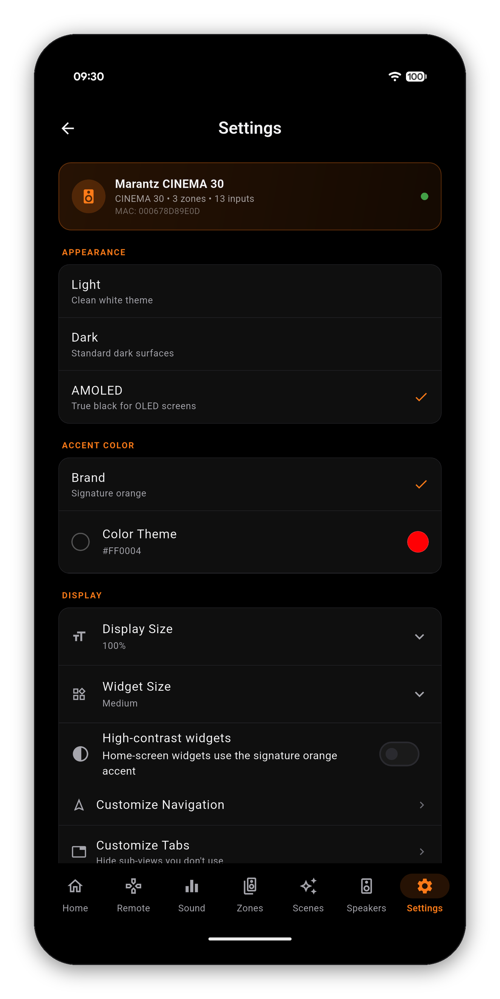

AVR Maestro talks to your receiver over your local network using its native protocol - no cloud account, no extra hardware. Here's how to connect and be in control in under a minute.


One-time purchase, no ads, no subscriptions - and your receiver's configuration never leaves your network.